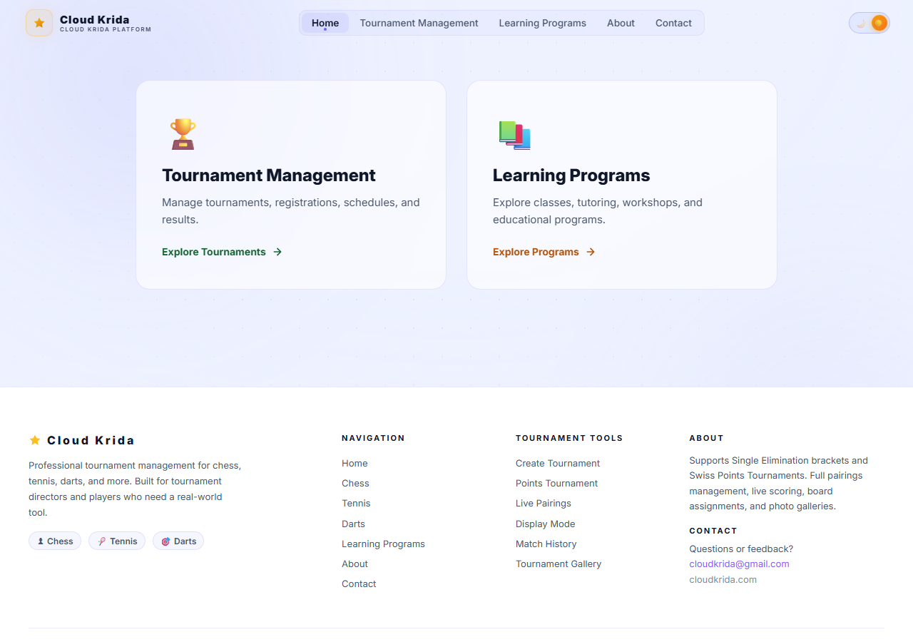

What changes when software has to survive a real 100+ player tournament?
I originally built a simple chess tournament tool — plain HTML, CSS, and JavaScript — for my school's chess club. It managed brackets, tracked standings, and automated round pairings for one division at a time. It worked fine for a small club event.
It could not have run the Albany Telangana Community Chess Tournament 2026. That event needed four age divisions running at once, public registration ahead of time, pairings that update live for everyone watching — not just the person refreshing a page — and more than one trusted person able to manage the event. I rebuilt the whole thing from scratch as Cloud Krida rather than patch the original tool past what it was designed for.
Requirements this had to meet
- Multiple concurrent divisions — Kindergarten–2nd, 3rd–5th, 6th–12th, and Adults, all running the same day.
- Real-time visibility — pairings and results visible to many people at once, without anyone manually refreshing.
- More than one operator — tournament directors besides me needed to run rounds, not just view them.
- Public registration — players sign up ahead of time, not through a spreadsheet I manage by hand.
- A record afterward — match history and photo galleries per tournament, not just live state that disappears.
How it's built
A React front end talks directly to Supabase for data, authentication, file storage, and live updates. Vercel builds and hosts the app on a custom domain.
What's actually in the database
Four core tables. I'm showing the real, verified structure here — confirmed columns where I have them, purpose only where I don't, rather than guessing at fields I haven't gone back to check.
tournaments, players, and
matches is described by purpose rather than an exact
field list I haven't independently re-verified for this write-up.
Three roles, enforced at the database
Cloud Krida has three access tiers — Guest,
Admin, and Super Admin — backed
by Supabase Auth and a role field on each user's
profile.
I enforced Row Level Security at the Postgres level rather than only hiding admin controls in the React UI. Supabase's client queries the database directly from the browser, so a Guest's client could technically attempt any query — hiding a button doesn't stop that. Putting the access rules in the database itself means every query is checked no matter where it comes from, not just the ones that go through my UI.
How pairings get made
Cloud Krida supports both Swiss-system and single-elimination tournaments. The diagram below shows how Swiss pairing works conceptually — the standard approach the engine implements — since I'm describing the algorithm's design here rather than walking through the exact source line by line.
What running on tournament day actually looks like
An admin enters a result or publishes the next round's pairings. Supabase Realtime pushes that change out over a WebSocket subscription, and every open browser — parents checking standings, players checking their board, other admins — updates without anyone refreshing. That's what "live pairings," "board assignments," and the site's own Display Mode actually run on.

Confirmed live features
- Live pairings and board assignments, synced in real time
- Match history per tournament
- Per-tournament photo galleries (Supabase Storage)
- Swiss Points and Single Elimination formats
- Public registration intake
Where testing stands
The project is set up with Vitest for the frontend. I haven't gone back to audit exact test coverage for this write-up, so I'm not going to claim more than that it's configured and available — that's a real next step, not a finished one.
Test coverage detail — pending audit.What actually changed
- Plain HTML, CSS, JavaScript
- One division at a time
- Single operator — me
- Static bracket pages, manual refresh
- Built for a school chess club
- React + Supabase, deployed on Vercel
- Four concurrent divisions
- Role-based multi-admin (Guest/Admin/Super Admin)
- Realtime sync, no manual refresh
- Ran a real 100+ participant community tournament
I rebuilt rather than patched because the gap wasn't a missing feature — it was architectural. The original tool had no concept of roles, no live sync, and no data model for more than one division running at once. Retrofitting that onto static pages would have cost more than starting over with Supabase underneath it.
What's real right now
Same rule as every case study here: built-and-working stays separate from measured-in-production.
- React + Vite frontend, deployed on Vercel with a custom domain
- Supabase Postgres backend: tournaments, players, matches, user_profiles
- Row Level Security enforced at the database level
- Three-tier RBAC (Guest / Admin / Super Admin) with a dedicated user-management Edge Function
- Supabase Realtime WebSocket sync for live pairings and results
- Swiss Points and Single Elimination tournament formats
- Public per-tournament photo galleries via Supabase Storage
- Live at cloudkrida.com, ran a real 100+ participant, 4-division community tournament
- Exact participant count beyond confirmed "100+"
- Match/round counts, latency, or uptime numbers
- Test coverage (Vitest configured; not audited)
- A specific tournament-day incident — not documented
- Independent security review beyond the documented RLS setup
What's next
- Audit and document real test coverage instead of just having Vitest configured.
- Capture an actual tournament-day retrospective after the next event runs through the platform.
- Extend the same tournament engine to the other sports already scaffolded in the codebase — darts, pickleball, and tennis — beyond chess.